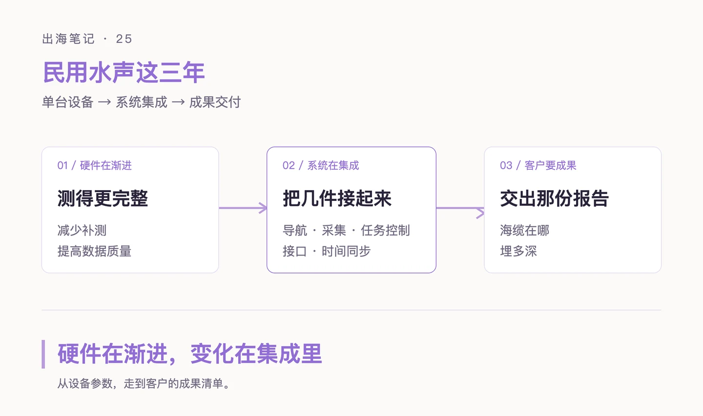
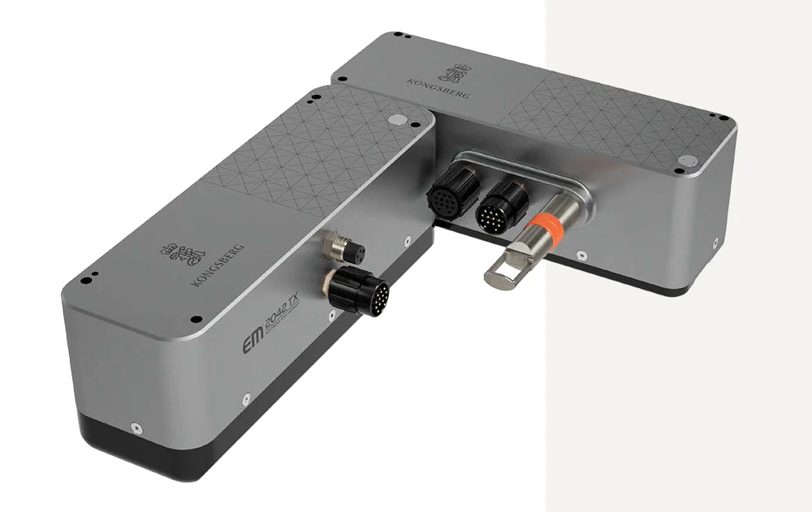
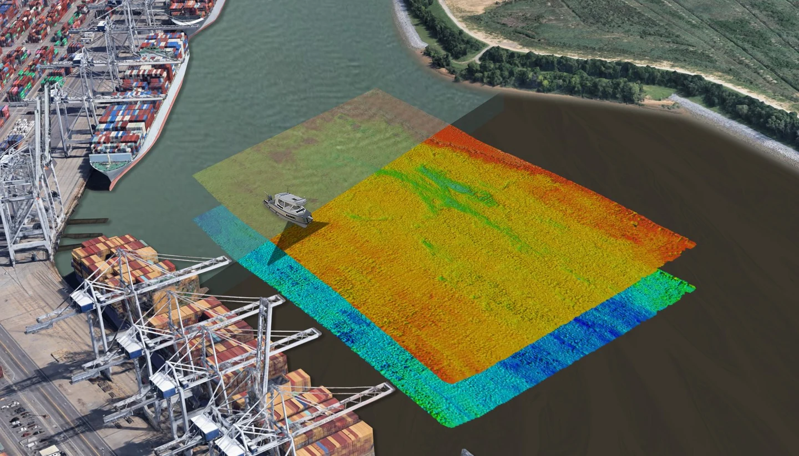
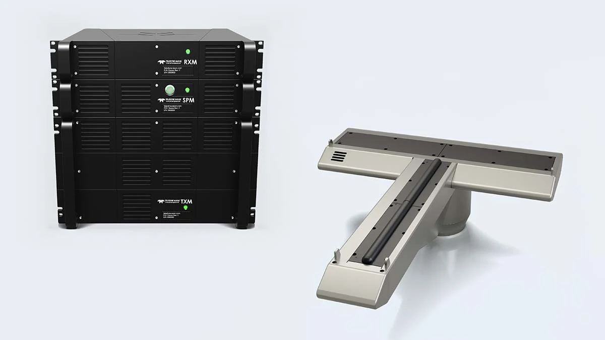
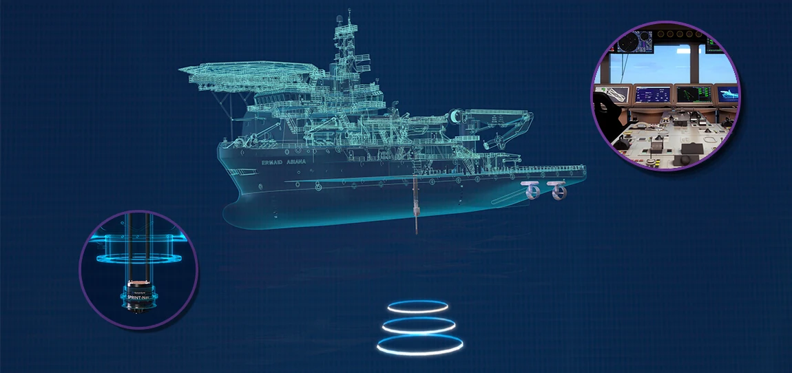
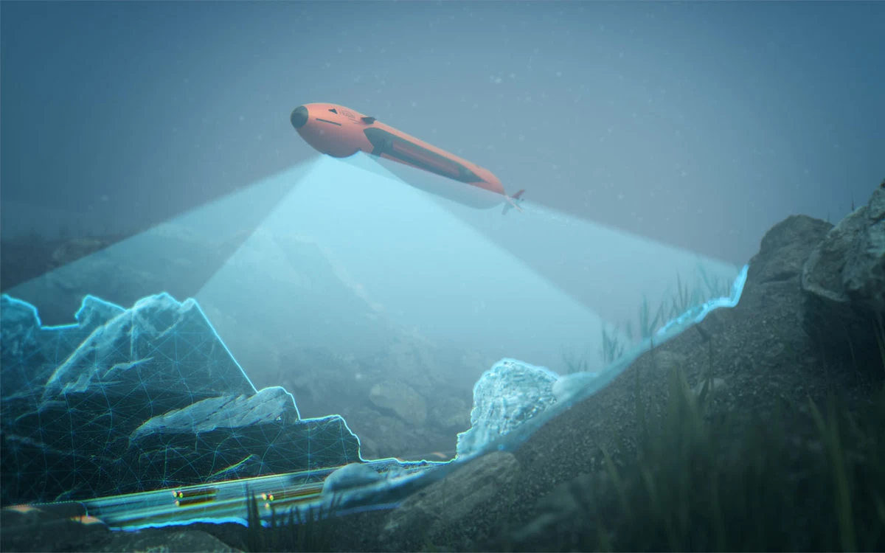

目录

序：一个多月，四封信
9 月中到 10 月下旬，我手上新进了几条海外浅剖线。
翻客户卡的时候，我发现其中四条在问同一类事：
- 南美一家调查公司，做浅水埋设管线的探测。
- 南美另一家服务商，业务清单里写着水下基础设施、管线、排海口。
- 东非一家测量咨询公司，接了一段管线过河的勘测。
- 东亚一家海缆工程公司，要查海缆埋了多深。
国内也有一封。一家海缆厂发邮件来，问海缆探测定位的设备。
一、管线客户问的，不是穿透多深
以前浅剖的询盘，开口多半是：能穿多深，分辨率多少。
这四封信不太一样。
东非那份标书写得很直白：管顶要在最低活动河床以下 1.5 米。东亚那家要做的，是一条埋深约 2 米的海缆调查。
至少这两家，要的是一个数字，一份报告。
更有意思的是，东非那份标书自己就配了电磁管线探测仪。
招标方心里有数：浅剖能看到地层，条件合适时也可能认出管线的反射，但能不能看清，还得看底质、埋深和管材。「埋了多深」这个数，单靠声学，不一定交得出来。
所以我们这边，今年也把浅剖和电磁定位放到了一起。展会上那块牌子写的是：海缆在哪，埋多深。
这类项目里，客户买的不是一台设备，是那份报告。
这不是我们一家遇到的事。把视线拉到海外，整个民用水声这三年，都在往这个方向走。
二、展台上的老东西：硬件在渐进
这两年去行业展会，民用这一侧，我很难看到让人眼前一亮的东西。转一圈下来，大多是集成、集成、集成。
这个感觉有一半是对的。水声硬件的物理已经很成熟，多波束、侧扫的进步，现在是渐进式的，不是革命式的。
另一半是：渐进不等于没动。我把海外几家龙头 2023 到 2026 年的民用新品翻了一遍，把新闻稿里的形容词删掉，剩下的东西几乎都在算同一笔账：客户这一趟船出去，能拿回多少能用的数据。
侧扫声呐正下方是瞎的，以前靠多跑重叠测线去补。Klein 的 4K-MAX 加了一个 850kHz 的通道专看正下方，厂商说效率提高 40% 左右。（测线怎么排、底质是什么，这个数都会变。）
Kongsberg 的 EM2042 有个 QuadSwath 模式，一个 ping 周期连续发出四条条带，相比单条带，测深点密度最多达到 4 倍。（密度翻四倍，项目可不会快四倍。）

Tritech 的 Gemini 1200id 重做了接收前端，分辨率往前推了一截。
没有一样是新原理。但每一样都落在作业上：有的减少补测，有的提高同一趟拿回的数据质量。
三、多波束，伸手摸到了泥
渐进里也有几处，边界在动。
港口和航道底下常有一层流泥，半稀不稠。判断船能不能过，光知道流泥上表面在哪还不够。以前靠打点、走剖面去摸下面那层。
NORBIT 做了一个功能，叫 Layered Media Detection：用多波束的高低频数据，把流泥的上表面和下面的底一起找出来，从点和线扩成一整片。2023 年在美国 Calcasieu 河试过，2024 年在 Savannah 港验证，厂商报告部分区域穿透超过 12 英尺。

（低频穿泥不是新招。声学测出来的那层底，也不自动等于航道部门认的通航底，还得配密度和当地标准。）
一台多波束，开始顺手做原来另一种设备的一部分活。
四、测量船，不用那么「专」了
以前要一条专用测量船做的事，开始能借一条船、挂一根杆做。
Teledyne 今年 3 月发的 D100，能测到 3000 米水深，阵列做得紧凑，可以临时挂在船舷的杆上。（目前只看到产品公告，还没看到具名客户的验收。）

同一家 10 月底又发了 T51-P。T51 这个平台本身不新，新的是装法：处理器做成防溅水的便携盒，24V 电池就能供电，冲着没有船舱的小艇去，港口岸壁这类活，一条小船就能下水。（同样刚发布，还没看到具名客户。）
Sonardyne 的 SPRINT-Nav DP，用惯导加 DVL 给浅水动力定位当参考，以海底为参照，少布海底应答器。去年 10 月，OS Energy 宣布选用它，装在新造船上，用于北海和波罗的海的海上可再生能源作业，首船预计今年交付。（底锁最深 230 米。）

设备变小、变轻、不挑船，下一步自然就是：几样东西，干脆装在一起。
五、真正的变化在集成里
新东西不是没有了，是换了地方。它不在展台的硬件壳子上，在系统集成里。这件事在三个层面同时发生。
第一层，公司在合并。
General Oceans 2021 年以挪威的 Nortek 为核心成立，2022 年收了英国的 Tritech，2023 年收了美国的 Klein，2024 年又收了 RS Aqua，另外还有一块水下机器人业务。多普勒、成像声呐、侧扫、机器人，归到一个集团。
NORBIT 2024 年 7 月完成收购德国的浅剖厂商 Innomar，企业价值 4,050 万欧元。多波束和浅剖，放在一起卖。
法国的 iXblue 和 ECA，2022 年合并成 Exail，惯导、无人船、水下潜器成了一家。Teledyne Marine 更早，RESON、RDI、BlueView、Odom、Gavia 这一串名字，早就收在一个屋檐下。
第二层，设备在合体。
Nortek 的 Nucleus1000，在带惯导的配置下，一个盒子同时给出 DVL 速度、姿态、压力、高度和惯导位置。今年 6 月，一家 ROV 厂拿它当统一导航，在自家四款 ROV 上完成了自主功能集成试验；其中三款新机型，做到了航点导航、定点悬停、定高定深。
原来分散在几件设备里的导航输出，现在收进一个盒子，内部同步也提前做好了。
第三层，交付在打包。
Kongsberg Discovery 从多波束、水声定位，一直做到 AUV 和无人船。传感器装在谁的平台上、数据进谁的软件，可以在一家里谈完。

这和东非那份标书，是同一个逻辑的两头。买方说：一件设备交不出整份报告，那就几件一起配。卖方说：那我把几件，做成一家的。
六、集成像把文章编成一本书
我一直觉得，系统集成有点像编书。
写了很多篇文章，有一天要编成一本书。章节都是现成的，要做的是连接、顺逻辑、前后一致、把矛盾改掉。从根本上说，没有新东西。
但编书分两种。
一种是按顺序钉在一起，能卖就行——这是组装。
另一种是编的过程中，长出了单篇里没有的框架——这是架构。把自主航行、声呐采集和任务控制打通，潜器就能按预定任务自己跑完一段测线。没有一个部件是新的，但干活的方式变了。
我在展会上看到的，组合展示多，完整的作业证据少。
还有一层容易被低估：集成里那些「不突破」的活，恰恰决定东西在海上能不能用。单机在实验室里过了关，装到一起、放进海里，还得重新面对盐雾、压力、振动和时间同步。Nucleus1000 卖点里那句「预同步」，就是把时间同步这件苦差事，提前在出厂时做掉了。
所以攒成一套，不等于打通。General Oceans 自己说得很坦白：收进来的品牌，各自保持运营独立和品牌身份。比品牌归到一家更进一步的，是两种证据：已经做过的集成试验，比如那家 ROV 厂的四款机型；已经有客户选用，比如 OS Energy 的新船。真正在海上长期用出来的证据，目前还不多。
七、AI 识别：还在「帮人先筛一遍」
说到新东西，最常被提的是 AI 目标识别。
这几年讲得很多，但我还没看到它成为标配。我能想到的原因有三个：水声数据又少又贵，船时费摆在那里；同一台侧扫，泥底、沙底、礁石底的图像差别很大，换个海域后能不能保持表现，是我更在意的问题；在管线检测这种活里，漏报可能留下风险，误报会增加复核成本，把决定权交给黑箱需要很大的信任。
所以现在落地的样子，是 AI 标出可疑点、人来拍板。
什么时候算真的突破？我的标准是：同一套模型，不用换个海域就重训，在不同底质上都稳定，并且被写进了采购标准。到那天，它才是标配。
收：给国内买设备的人
回到那四封信。
四封询盘的问法不同，但用途都落在管线和海缆上。其中两家，已经把问题问到了埋深。
海外这三年的变化，说到底也指向这件事：硬件在渐进，单台设备在减少补测、提高一趟作业的数据质量；集成在加速，一整套在帮客户少找几家供应商。除了参数，部署、接口和成果交付，也越来越进入同一张采购清单。
下次写技术要求，可以试着在参数表下面多写一行：最后要交的成果是什么，谁对它负责。
新品是展台上的事，交出那份成果，是客户账本上的事。